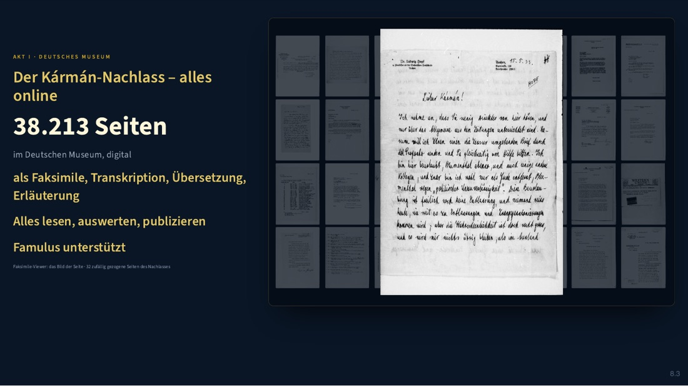
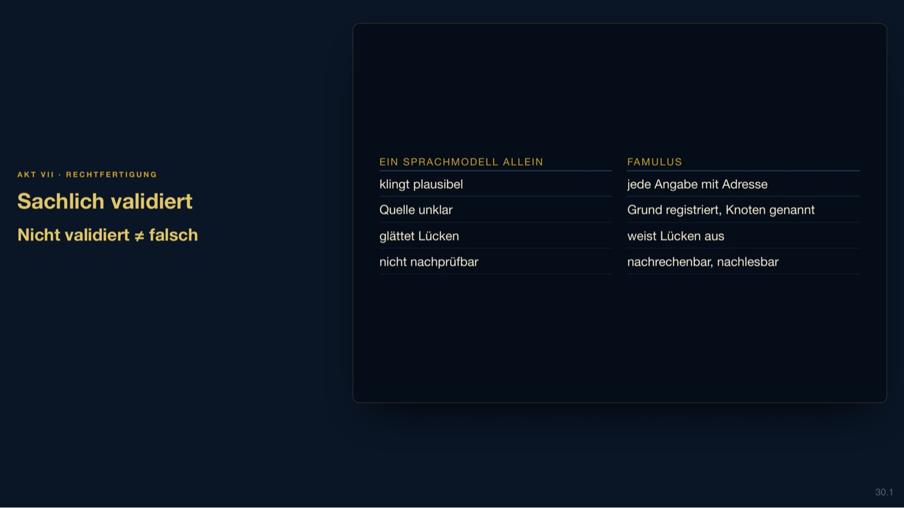
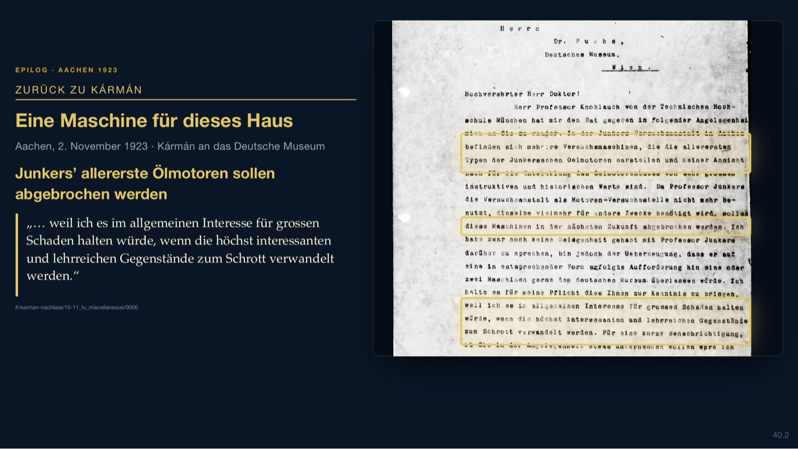

Le fonds Kármán, examiné avec Famulus
Famulus Deep Reading
Famulus Lectures · N° 1
Gerd Graßhoff · Philosophisches Institut, Humboldt-Universität zu Berlin; Forschungsinstitut, Deutsches Museum
Deutsches Museum, Munich, salle de séminaire de la recherche · 23 novembre 2026 · Conférence au Deutsches Museum
Version éditée de la conférence du 23 novembre 2026, établie avec Famulus. Traduction de l’allemand ; la version allemande fait foi.
Licence: CC BY-NC-ND 4.0 · Version 1.0 (Entwurf) · État 2026-11-23
Proposition de citation: Gerd Graßhoff: Le fonds Kármán, examiné avec Famulus. Famulus Deep Reading. Famulus Lectures 1, Deutsches Museum, Munich, salle de séminaire de la recherche, 23 novembre 2026. https://famulus.lettre.ai/lectures/1/fr/
Ouverture
Merci pour la possibilité et pour cette visite matinale un lundi. Je vais essayer de présenter de manière très concentrée le point que je souhaite vous rapporter et soumettre à votre appréciation. Nous réfléchissons à la possibilité de déposer une demande de financement afin de présenter ce que j’expose non pas seulement comme une technique à effet de surprise, mais comme un outil utile pour la recherche, pour le musée et pour ceux qui travaillent avec. C’est pour cela que je veux argumenter aujourd’hui. Je vais enregistrer la conférence afin de présenter un outil de conférence de Famulus : l’enregistrement sera transcrit une fois terminé, combiné avec les diapositives et publié de manière à ce que les participants puissent lire la conférence annotée avec les diapositives. Dans ce prototype, cela ne fonctionne pas encore immédiatement aujourd’hui.

Fig. 1 · Le fonds Kármán, examiné avec Famulus (Diapositive 3)
Je ne m’appuie pas sur la technologie la plus récente, mais sur la grande tradition de l’histoire des sciences avec Erasmus (→ Fig. 1). Je me suis placé dans cette tradition, et ce pour quoi je veux argumenter, je ne veux pas du tout l’appeler IA. C’est d’abord une question de terminologie : de quoi parlons-nous. Nous ne parlons pas d’agents comme Claude ou d’autres acteurs personnalisés, mais de quelque chose que je voudrais appeler Famulus – en référence à l’usage linguistique de la Renaissance et de l’humanisme chez Erasmus.
Erasmus utilise l’expression Famulus dans ses œuvres. Nous voyons ici Dürer dans l’une de ses intuitions inimitables de la terminologie : Erasmus écrivant de la main droite, tenant quelque chose de la main gauche. Comme toujours avec les gravures de Dürer, la grande question est de savoir ce que nous voyons réellement ici. À droite, il écrit manifestement, à gauche je l’interprète comme un encrier – mais permettez-moi la plaisanterie pour pousser la métaphore plus loin : c’est, dans ma lecture, Famulus. Famulus, traduit du latin, c’est l’auxiliaire. Et nous savons par de nombreuses lettres d’Erasmus que le Famulus est l’auxiliaire, qui peut être très savant.
Il dispose d’un réseau d’auxiliaires qui travaillaient pour lui. Dans ce travail préparatoire, ils pouvaient apporter toutes leurs compétences, sauf une chose : ils ne devaient pas apporter un jugement scientifique propre.

Fig. 2 · Riemann : quatre jours sur tous les canaux (Diapositive 9)
En transposant aux activités des quatre derniers jours, j’essaie ici de reprendre pourquoi, dans ce qui s’est passé ces quatre derniers jours, en lien avec le théorème de Riemann, quels actes de communication ont eu lieu ces quatre derniers jours dans la communauté scientifique (→ Fig. 2). Cela est monitoré en direct. Je dispose d’un moniteur scientifique qui enregistre, documente et évalue toutes les publications, toutes les communications accessibles. Pour comprendre, pour voir comment fonctionne ce processus de création scientifique. Et il y a eu une annonce, au milieu de la semaine dernière, selon laquelle le théorème de Riemann est démontré. Ce n’est d’abord qu’une affirmation hardie, en particulier lorsqu’on voit que la preuve n’a pas été faite sous forme mathématique conventionnelle, mais par la remise de 250000 pages de code imprimé.

C’est le premier problème : qui vérifie le code (→ Fig. 3)? Est-ce déjà du savoir ? Naturellement non. Mais – et c’est le processus que je montre ici – il se déroule un intense processus de communication scientifique qui, à partir de ce qui suit l’annonce, produit finalement quelque chose dont je suis convaincu que cela se révélera soit comme du savoir, soit comme une annonce prématurée avec des lacunes qui ne pourront plus être comblées. Comment le jeu se termine, nous ne le savons pas.
Je voudrais exploiter le parallélisme : déjà dans ces dialogues des scientifiques avec l’emploi de la technique, nous trouvons des déclarations comme dans l’annonce initiale : oui, j’ai trouvé cette preuve, working with Claude. Qui est Claude ? Claude est la technologie. Elle est personnalisée par Tropics en raison de sa dénomination – c’est précisément ce que je voudrais éviter, car cela suggère que nous avons ici un acteur scientifique. Selon ma lecture, nous ne l’avons pas.
Lean, le prouveur, est une technique mathématique de démonstration automatique qui est employée ici. Cette technique a traité ces 250.000 pages et démontré que cette preuve est sans lacune et correcte selon toute la compréhension de l’emploi de cette technologie par la communauté.
Qu’est-ce que Famulus et que peut-il faire ?
Prologue

Fig. 4 · La plateforme Kármán. Le fonds comprend 1 066 dossiers avec 38 213 pages et est accessible en un clic comme plateforme. (Diapositive 13)

Ma lecture est la suivante : ce que Lean est aux mathématiques, je voudrais l’introduire comme Famulus pour l’histoire des techniques et des sciences (→ Fig. 4, Fig. 5). C’est une grande annonce un lundi matin – pardonnez-moi, entre amis, c’est ma tentative de sortir un peu la tête. Pour le montrer, je voudrais le relier à la publication du fonds Kármán, tel que je l’ai traité et préparé. Le fonds que vous voyez ici est accessible dans la mesure du possible ; on y travaille encore, de sorte qu’actuellement, sur 1066 boîtes, 328 sont entièrement numérisées.
Les machines tournent toutes en arrière-plan et dominent ma pension. Nous en sommes tout de même à un tiers, et dans les deux prochaines semaines, toutes les pages restantes seront vraisemblablement numérisées. Vous trouvez déjà ici une catégorisation automatique. Vous voyez que ce fonds comprend environ 204 correspondants, ce que l’on ne voit pas dans l’instrument de recherche. Les chiffres peuvent encore changer en raison du traitement ; c’est provisoire.
240 papiers, 142 manuscrits de Kármán et ainsi de suite. Des brevets, mais aussi des thèmes comme les turbines, la tubuline, les fonctions d’expert, les ponts qui se sont effondrés en raison de phénomènes vibratoires, et autres. Tout cela est systématisé et déjà réparti automatiquement en catégories par Famulus.
Tout cela est déjà consultable et utilisable. Vous voyez sur le côté gauche du site web un registre qui peut être filtré par les catégories, donc selon qu’il s’agit de manuscrits ou de correspondance ; ensuite toutes les correspondances sont listées, on peut les regrouper. Au centre, on verra que l’on peut ouvrir les différents documents. Sur le côté gauche ici sont réglés les fac-similés, donc tous les fac-similés sont immédiatement visibles. Sur le côté droit, la transcription. Elle est aussi capable de transcrire de manière conforme à l’OCR les mathématiques et les textes similaires plus compliqués, ainsi que tous les textes en langues étrangères.
On peut les copier pour en créer du LaTeX ou d’autres documents de publication. En haut, on peut naviguer, et cela peut se faire si rapidement qu’une bonne lisibilité à l’écran est, je pense, garantie. Ici, c’est la variante d’édition fac-similé de cette lettre. On dispose alors déjà, dans cet environnement, d’outils de traitement. Voilà maintenant la perspective de l’utilisateur : comment puis-je utiliser l’accès à cet état. Vous l’avez vu, environ 700 000 phrases sont identifiées individuellement et numérisées.
Famulus n’est donc pas seulement capable de montrer des fac-similés en traduction ; l’analyse que je peux vous montrer maintenant travaille à la phrase près et bien plus précisément encore, y compris les ajouts médiatiques, les désignations et autres supports d’information. On peut cliquer sur des phrases. En cliquant, on sélectionne un segment – c’est ainsi que je l’ai appelé dans la terminologie – pour en faire quelque chose. Un effet secondaire est que l’on peut citer chacun de ces segments et l’indiquer comme citation dans ses propres publications ; le support de publication de cette citation est alors signalé comme lien cliquable, et l’endroit lié s’affiche à l’utilisateur. On peut donc citer à la phrase près. Et pas seulement cela : en sélectionnant – là je vais un peu vite –, on peut aussi, et cela doit de toute façon être accompli par l’IA, par Famulus, interpréter le sens de manière parfaitement transparente.

Cela signifie donc montrer la compréhension du texte (→ Fig. 6). Que dit-on ici en réalité ? Quelles sont les présupposés implicites de ce passage ? Tout cela s’affiche dans la barre de droite. On peut ceci, donc ce système apprendrait ; à partir de documents plus récents, cette compréhension du texte sera sans cesse actualisée, retravaillée, et par là même toujours plus validée, plus correcte et plus sûre.
On peut régler les traductions à volonté. J’ai configuré les principales langues européennes, mais on peut traduire à volonté dans toutes les langues, en 140 ou 70 langues. On peut aussi faire traduire des passages entiers en direct ; il n’y a rien à conserver. Cela va si vite qu’une traduction se fait en quelques secondes.
En quelques clics, on peut aussi sélectionner des paragraphes entiers. On peut ensuite interroger par noms et par domaines et faire appeler les dossiers correspondants. Ou bien – Famulus crée automatiquement des dossiers par le traitement de ces sources.
Il les traite aussi avec d’autres ouvrages de référence bibliographiques ou biographiques, de sorte que les dossiers deviennent toujours plus valides, plus complets et plus pertinents. Je peux ici, dans la colonne de droite, pour une page déterminée, ouvrir le dossier, comme on peut le deviner ici, et faire afficher un dossier sur une personne mentionnée ici. Il contient typiquement les principales étapes biographiques, les œuvres principales et ce qui pourrait être particulièrement intéressant pour le contexte. On peut aussi poser des requêtes, des questions de toute nature sur cet endroit, sur ce texte, mais aussi dans ce que j’appelle globalement l’espace de preuve – donc ce qui peut entrer en ligne de compte comme preuve pour une réponse. Je voudrais expliquer tout à l’heure pourquoi la réponse n’est pas, comme dans une requête ChatGPT, alimentée et validée par on ne sait quel Wikipedia, mais la validation est ici une justification de la correction de la réponse, fondée en toute rigueur en théorie des sciences. C’est ce que j’appelle la validation.
On peut donc poser des requêtes à volonté, ici quelque chose sur la correspondance de Prandtl. Je ne fais que le montrer ; ce sont les possibilités que vous obtenez si Famulus était utilisable. Vous avez la compréhension du texte, vous avez la traduction, vous avez les dictionnaires. J’ai construit les dictionnaires à partir d’un concept de l’Oxford English Dictionary combiné avec la philosophie du langage de Wittgenstein sur le suivi de règles. Cela signifie que ces dictionnaires sont créés par Famulus lui-même à partir de l’espace de documents de preuve, et cela dans le style de toutes les occurrences caractéristiques pertinentes, avec des explications de la terminologie dans la langue originale.
Que ce soit le hongrois, le latin, le grec ou l’anglais, peu importe. Le dictionnaire n’est pas seulement créé universellement selon les meilleures procédures de la lexicographie linguistique, il est aussi relatif au contexte. Vous pouvez choisir des significations pour une période déterminée. Vous pouvez même identifier des significations pour certains auteurs et des manières de parler relatives. Et si vous le voulez vraiment de manière rigoureuse dans la recherche, vous pouvez aussi mettre en évidence des différences d’usage terminologique entre deux auteurs différents de la même époque. Voilà les dictionnaires.
Les traductions y sont liées. Cela doit être si finement accordé que les traductions utilisent aussi les analyses de compréhension du texte des dictionnaires. Ce sont les outils que le chercheur utilisateur peut déjà utiliser avec un tel fonds d’archives. Encore un exemple, pour montrer que ce ne doit pas encore être tout.
Revenons à ce qui rend Lean ou le débat actuel sur Riemann si intéressant : le démonstrateur participe à la communication scientifique, il est un participant de cette génération de savoir. C’est ainsi que je comprends aussi Famulus : un instrument au sens d’Érasme, sans faculté de jugement propre et sans licence pour cela. C’est le rôle du chercheur, du savant ; Famulus est le producteur d’auxiliaires.
Dans l’exécution et la mise en œuvre des auxiliaires travaillent les deux mains d’Érasme : le chercheur qui écrit, le producteur d’encrier qui travaille avec Famulus.
Voilà, c’est encore la visualisation qui va avec. Oups. Oh, j’ai malheureusement tourné la page dans le mauvais sens.
Nous en venons au fonds. Le fonds se compose maintenant de 38 000 pages numérisées ; l’ensemble du fonds est numérisé.
Le fonds d’archives est numérique
Acte I

Fig. 7 · Le fonds Kármán – tout en ligne. 32 pages tirées au hasard montrent la forme médiatique mixte du fonds, chacune sous forme de fac-similé, de transcription, de traduction et d’explication. (Diapositive 24)
Comme vous le voyez ici : une forme médiatique mixte (→ Fig. 7). Imprimés et dactylogrammes, manuscrits, diagrammes – toutes sortes de choses se trouvent dans une archive. La qualité de l’OCR est si développée dans Famulus que même des lettres hongroises avec toutes sortes d’accents, que je ne comprends pas moi-même, peuvent être transcrites et bien traduites. Nous disposons du fac-similé, de la transcription, de la traduction et de l’explication.

Que pouvons-nous encore faire d’autre avec Famulus (→ Fig. 8)? Pour l’illustrer brièvement à l’aide de cet exemple : nous avons ici des objets, sans avoir les originaux en maison. Les originaux se trouvent à Caltech et y ont été numérisés dans le cadre d’une vaste opération. J’ai pu acheter les microfiches de l’Université de Berne, avec la possibilité de travailler avec.
Famulus lit avec
Acte II
Je l’ai ensuite numérisé intégralement il y a dix ans ; ces fac-similés numériques servent de base et ont été préparés par mes soins. Nous venons de voir ce fonds Kármán. Il y a maintenant des questions de recherche intéressantes.

Fig. 9 · Noter avec preuve. Dans le dossier, les faits concernant Hopf sont notés avec preuve, admis, rejetés et corrigés ; le jugement de la chercheuse fait foi. (Diapositive 29)
Seulement quelques exemples, pour que vous deviniez de quoi il s’agit (→ Fig. 9). Vous pouvez identifier des questions à partir du fonds qui vous intéresseront ensuite dans la recherche ; vous pouvez transcrire – nous avons fait tout cela.
Une question de recherche
Acte III

Fig. 10 · Qu’a vu Kármán à Aix-la-Chapelle ? (Diapositive 31)
Mais nous pouvons aussi trouver des questions intéressantes, comme dans cette lettre à Fromm de Kármán datant de la période après la prise du pouvoir par les nazis (→ Fig. 10). C’est une lettre de Kármán envoyée de Pasadena, le 26 novembre 1934, avec l’indication qu’il venait d’être de nouveau à Aix-la-Chapelle. Comme vous le voyez ici – ou ne le voyez pas, en tout cas j’ai essayé de le souligner – : que dit Kármán sur Aix-la-Chapelle, comment a-t-il trouvé sa visite à Aix-la-Chapelle ?
I was in Aachen this summer and found conditions quite unchanged. [trad. : J’étais à Aix-la-Chapelle cet été et j’ai trouvé les conditions tout à fait inchangées.] Donc, c’est d’abord assez stupéfiant. 34, il est en exil et trouve la situation ou les conditions inchangées. Écrit-il à Fromm. Il écrit un peu plus loin, not advisable to express one’s disapproval in a café. [trad. : il n’est pas conseillé d’exprimer son désaccord dans un café.] Donc il y a quelques notes de bas de page qui s’ajoutent, où la situation n’était sans doute pas tout à fait comme avant.

Et puis Fromm répond : « und zwar bin ich wohl nur als Jude entfernt » [trad (→ Fig. 11). : et en fait je n’ai probablement été éloigné qu’en tant que Juif]. Ce qu’il voulait dire exactement par là est une question d’interprétation de ce texte, avec laquelle on peut importuner Famulus. Savoir si l’on est satisfait de la réponse est, dans cette phase, d’abord une autre affaire. Mais ce sont les questions de recherche intéressantes que l’on peut discuter avec un tel instrument – ne serait-ce qu’en tant que Famulus, en tant qu’assistant auxiliaire, si vous voulez. La capacité de jugement revient au chercheur qui possède l’instrument lui-même.

Fig. 12 · Qui a demandé de l’aide à Kármán ? (Diapositive 37)
Donc : inchangé – pour qui (→ Fig. 12)? Pourquoi Kármán écrit-il cela ? Qui a demandé de l’aide à Kármán ? Vous voyez maintenant des possibilités d’utilisation de ces archives que l’on ne peut plus réaliser pratiquement à la main : parcourir l’ensemble des archives. Et face à cette simple question – qui a demandé de l’aide à Kármán ? – les techniques d’indexation habituelles de traitement de ces archives actives échouent ; on ne peut pas y répondre. Ici, on peut la résoudre directement avec Kármán, et vous voyez une chronologie de tous les documents dans lesquels un correspondant quelconque demande de l’aide.
Mais cela continue : que pouvait faire Kármán ? Kármán dit que son influence est très faible ; il conseille à Hopf de chercher une autre source. Sur la page de droite – malheureusement le contraste n’est pas bon – vous voyez un diagramme de toutes les boîtes que contiennent les archives, et un renvoi aux emplacements de tous les correspondants qui ont demandé de l’aide. Vous voyez que cela se répartit sur différentes boîtes.
Le chemin parcouru jusqu’ici
Acte IV

Fig. 13 · Chaque pièce classifiée. Chaque pièce est classifiée selon son type : 5.676 lettres, 3.903 notes, 3.347 rapports, ainsi que des brevets dans 64 chemises. (Diapositive 40)
Avec un instrument de recherche aux archives, vous n’avez aucune chance de répondre à une question aussi simple (→ Fig. 13). Famulus le peut. Voici un cas où des questions de recherche peuvent être résolues, alors qu’elles ne peuvent l’être de manière traditionnelle, ne serait-ce qu’en raison de l’ampleur des archives. Chaque pièce est classifiée, et chaque phrase peut être citée et réutilisée dans toute publication.


Fig. 15 · Millisecondes. La recherche par lemme de « beurlauben » trouve six résultats en 0,7 milliseconde dans 8.745.834 mots. (Diapositive 42)
Ce qui est décisif pour parvenir à des résultats finis, c’est la vitesse à laquelle tout cela se passe (→ Fig. 14, Fig. 15). C’est une grande partie sur laquelle j’ai passé plusieurs mois, pour une recherche par lemme, c’est-à-dire par la forme de base linguistique des formes grammaticalement fléchies, donc pas seulement « aide » : si quelqu’un écrit comment on demande de l’aide dans une lettre, on ne peut pas chercher « aide », il faut prendre en compte les différentes manières de demander de l’aide. C’est ce que permet cette recherche, et comme vous le voyez, la recherche par lemme dans l’ensemble du fonds de 700000 phrases donne six résultats en 0,7 milliseconde. Cette vitesse est nécessaire pour pouvoir ensuite utiliser de telles vitesses afin de parcourir aussi les contextes plus larges et de les traiter en un temps fini. Ainsi, les requêtes sur le dossier concernant une personne et ses arrière-plans sont appelées en 1,3 milliseconde.
Famulus met à disposition les profils personnels de toutes les personnes dont il est question dans un texte en 1,3 milliseconde. Mais trouver n’est pas encore comprendre – l’étape suivante est la question au fonds. Lorsque vous avez toutes les occurrences, vous devez les traiter pour en produire un résultat compréhensif, correct et substantiel, avec lequel vous pouvez continuer à travailler.
Avec Famulus
Acte V


Fig. 17 · Un dossier à partir de quatre boîtes (Diapositive 45)
Vous pouvez donc poser des questions au fonds d’archives (→ Fig. 16, Fig. 17). La recherche dans les boîtes est étendue, comme nous pouvons à présent le pressentir, mais elle exige cette rapidité pour trouver en quelques secondes une compilation de toutes les occurrences pertinentes. Chaque occurrence a une adresse. C’est important pour que Famulus puisse justifier en divulguant toutes les preuves. Pas de boîte noire, rien de caché.

C’est ainsi que nous trouvons des réponses dans cette correspondance, où Kármán, face à une demande concrète d’aide et de soutien, dit : « Leider muss ich gestehen, dass mein Einfluss sehr gering ist (→ Fig. 18). » [trad. : Je dois malheureusement avouer que mon influence est très faible.] Dans cette lettre se manifeste une situation typique : Hopf écrit à Kármán, avez-vous une fois écrit à Courant. Pour les initiés, c’est un véritable tuyau sur la manière d’obtenir une aide supplémentaire, que Kármán ne peut manifestement pas donner. Et dans la lettre à Hopf, Kármán écrit que vous devez trouver une autre source pour financer votre excursion – donc l’exil.
L’espace de preuve s’élargit
Acte VI

Fig. 19 · La réponse a des extrémités ouvertes. La chronologie se termine de manière ouverte : Courant et Heisenberg sont mentionnés, mais leurs fonds ne sont pas attestés dans le fonds. (Diapositive 51)
Dublin, décembre 39 (→ Fig. 19). Voilà, ce sont encore toutes des références du secteur « trouve quelque chose de pertinent ». Maintenant, nous avons ici quelque chose : si nous rassemblons toutes ces références, nous voyons que, bien sûr, ce fonds Kármán aussi, je l’ai appelé à mains ouvertes, précisément cette mention de Courant. Mais Courant ne fait pas partie de ce fonds. Ou Heisenberg est mentionné, mais la correspondance de Heisenberg ou tout ce qui concerne son fonds n’est pas non plus inclus ici.

Fig. 20 · Un réseau de fonds. Des nœuds enregistrés et signés relient des fonds étrangers, de sorte que chaque lieu reste identifiable et citable de manière décentralisée. (Diapositive 52)
L’idée est de construire un réseau Famulus : Famulus Reference (→ Fig. 20). Des fonds y sont reliés, et techniquement, cela doit être si simple à installer que toute institution intéressée qui conserve de tels fonds d’archives puisse s’enregistrer et s’inscrire. Une installation technique minimale est nécessaire, un accès à Internet également, tout doit être sûr, tout est calculé localement, les normes européennes habituelles sont respectées. Famulus peut alors, à cette vitesse, non seulement traiter les fonds locaux, mais aussi un réseau de tous les fonds reliés entre eux de manière pertinente. Décentralisé, signé : chaque lieu, chaque phrase est identifiable et citable.
Peut-on faire confiance à la réponse ?
Acte VII
Des erreurs sont toujours possibles, même avec un Famulus, aussi bon soit-il. Il ne faut pas pour autant le remplacer ou le jeter dès que des erreurs surviennent – comme ici avec un OCR où une erreur de reconnaissance se produit et où « Zensur » est reconnu à la place de « Lessor ». Cela arrive, surtout en reconnaissance d’écriture manuscrite. C’est bien meilleur que Transkribus, très bon, mais des erreurs surviennent. Famulus permet une curation du fonds, et ce de manière extrêmement efficace : une fois une erreur identifiée, elle peut être corrigée avec un contrôle de version et entre dans l’amélioration des fonds.

Fig. 21 · Validé sur le fond. Un modèle de langage seul sonne plausible et lisse les lacunes ; Famulus donne chaque indication avec son adresse et signale les lacunes. (Diapositive 58)
Je n’y reviens pas (→ Fig. 21). L’important est l’aspect de l’exigence de Famulus, qui le distingue de toutes les autres offres d’IA – dans mon propos, de manière assez radicalement claire : les résultats obtenus ici sont validés sur le fond.

C’est-à-dire que leur exactitude peut être retracée, vérifiée par le chercheur (→ Fig. 22). Et nous voici de nouveau dans l’analogie avec Lean. Lean a maintenant, est un programme, analogue à Famulus, qui a effectué le calcul de la démonstration de l’hypothèse de Riemann, que personne en détail ne peut vérifier soi-même. Et ce que vous voyez, ce qui se passe en ce moment dans la communication scientifique, c’est précisément une mise en correspondance linguistique de la langue du traitement symbolique par Lean, insupportable pour l’humain, à un niveau tel que cette démonstration est traduite en une preuve compréhensible pour les mathématiciens. Et cela a déjà donné, après cinq jours, des premiers résultats et propositions. Donc il y a maintenant les 250000 pages de code imprimé réduites à 55 pages de texte de preuve scientifique condensé, et celui-ci est en cours d’élaboration par toute la communauté.
Typique du fait que le savoir n’est pas un processus individuel et que la connaissance est un aspect collaboratif de la recherche mondiale. Nous en venons maintenant au Deep Reading. Dans le volume d’hommage à Lieber Tauch, j’ai introduit le terme Deep Reading : il y a le Distant Reading, le Close Reading, et maintenant il y a une troisième chose, et c’est ce que fait Famulus – le Deep Reading. Les techniques d’IA permettent d’interroger les significations des expressions et des textes scientifiques. Non seulement la symbolique, non seulement la syntaxe, les expressions, les manières de s’exprimer, les chaînes de caractères, mais les contenus.
Je le montre à partir de l’étude des œuvres complètes de Kepler.
Vous voyez ici un passage du chapitre 23, où Kepler introduit une phrase. Il a publié un résultat pour un modèle astronomique avec lequel il travaille, et il fixe l’indication numérique qu’une certaine grandeur, abrégée DC, a la valeur 61 148. Je n’ai encore vu aucune publication à ma connaissance qui ait recalculé cette valeur. D’où vient-elle au juste ? Comment Kepler y arrive-t-il ? Les historiens des sciences ordinaires passent sur de tels endroits et disent que quelqu’un le calculera un jour. Cela ne se produit plus maintenant. Maintenant, nous avons Famulus.
Que fait Famulus ? Comme avec Kármán, il a analysé tout le texte jusqu’à chaque symbolique et chaque diagramme. Cela permet des indications plausibles. Kepler expose sa manière de travailler assez ouvertement, mais pas toujours de façon cohérente – un auteur extrêmement difficile, mais généreux en informations sur la façon dont il procède. Et de fait, il y a dans les œuvres complètes, chapitre 15, un passage où il dit qu’il utilise ici des tables pour calculer.
De manière très générale, à savoir les tables de Landsbergius, des tables de triangles, donc si vous voulez des tables de sinus et des tables trigonométriques apparentées. Bon, qu’a fait Famulus ? Il a chargé automatiquement depuis l’ETH Zurich le fac-similé de cette table, celle-ci a été immédiatement reprise dans le fonds, numérisée, il faut ensuite aussi une demi-journée pour numériser correctement une table. Toutes les tables individuelles, c’est une page de table, doivent être numérisées de manière que chaque cellule de calcul individuelle soit reproduite correctement. Donc les exigences envers l’OCR sont très élevées. Bon, et maintenant la tâche de Famulus, tu es un Famulus, tu n’as pas besoin de juger, tâche simple, recalcule les nombres, a-t-il donc utilisé cette table, ces tables ?
Et si oui, comment ?

Fig. 23 · Le calcul reconstruit. Le calcul donne après recalcul 61145, l’impression porte 61148 : les deux derniers chiffres ont été abandonnés. (Diapositive 71)
Cette tâche n’a encore été réalisée par aucun chercheur keplérien, et je m’y compte aussi (→ Fig. 23). Tout simplement trop fastidieux, coûteux, chronophage. On peut confier la tâche à Famulus. Il faut saisir la situation problématique dont il s’agit, transformer une fonction sinus – cela s’accomplit automatiquement dans le Deep Reading –, et ensuite le calcul est déroulé.
Et vous voyez entre-temps pourquoi les hautes vitesses sont nécessaires. Le tableau, chaque cellule individuelle est multipliée comme l’exige le maniement de ces tables. Et vous obtenez, après recalcul, que l’impression donne 61148, le recalcul 61145. Petite divergence encore, mais déjà telle qu’un historien peut s’en satisfaire. Les questions ultérieures sont déjà à nouveau intéressantes et riches, pourquoi cette différence. A-t-il peut-être une autre table, une autre édition, s’est-il trompé dans son calcul, ce que Kepler fait souvent.
Il n’a d’ailleurs pas toujours calculé lui-même, mais avait, comme Erasmus, quelques Famuli non pris en compte par ailleurs dans la littérature, qui travaillaient pour lui, précisément pour effectuer les calculs. Chaque étape individuelle est vérifiée. La validation d’un résultat permet, à chaque calcul que le Deep Reading d’un texte comme l’Astronomia permet, de demander : comment en est-il venu étape par étape à ce résultat pour Kepler ? Chaque étape individuelle est indiquée. On peut l’utiliser pour générer ses propres nouvelles séries de publications. Je les ai appelées Expertise.
Des expertises reconstruiraient certains blocs de calcul dans une œuvre comme celle de Kepler, les recalculeraient et les commenteraient – ici la bipartition de l’excentricité sur la base de l’hypothèse vicariante –, comme le fait aussi un bon éditeur critique de ces œuvres.
Généré automatiquement. Ensuite il y a des exigences pour la publication, que j’ai réunies en un certificat Famulus : des conditions que ce texte doit remplir pour satisfaire à la haute exigence d’exactitude. Quand on a ce certificat, on obtient une publication qui non seulement rend pleinement transparente la démonstration, mais interprète et indique aussi les moyens graphiques utilisés, les diagrammes.
Continuer le travail dans le Notebook
Acte VIII

Fig. 24 · Le modèle se meut. La Fig. 4.10 de Kepler est mue comme modèle avec 14 objets et vérifiée sur l’espace des paramètres. (Diapositive 83)
Pour comprendre ce qui se passe réellement dans les modèles géométriques utilisés : tous ces dessins sont générés par Famulus ; ce ne sont pas des dessins tirés de publications (→ Fig. 24).

Je dois arriver à la fin (→ Fig. 25). Que dire donc ? Ce que Lean est à Riemann, Famulus l’est à Kepler. Et j’espère avoir pu vous communiquer que, selon ma compréhension, il est un démonstrateur et un instrument conduisant la démonstration pour l’histoire des sciences et des techniques, dans un tel ensemble d’œuvres de l’histoire de l’astronomie, je l’espère.
Retour à Kármán
Épilogue

Fig. 26 · Une machine pour cette maison. Kármán écrit le 2 novembre 1923 au Deutsches Museum parce que les tout premiers moteurs à huile de Junkers doivent être mis au rebut. (Diapositive 90)
Comme nous sommes maintenant au Deutsches Museum, on pourrait se demander s’il y a quoi que ce soit dans le fonds Kármán où le Deutsches Museum est déjà mentionné (→ Fig. 26). Avec Famulus, la question est simple. Par l’instrument de recherche, cette question ne peut, je crois, pas être tranchée ; je ne l’ai pas vraiment vérifié. Famulus trouve une correspondance du 2 novembre 1923, à savoir Kármán au Deutsches Museum. Il y avait là une demande d’un collègue de Vienne sur ce qu’il advient des tout premiers moteurs à huile de Junkers, car ils devaient être mis à la ferraille à Aix-la-Chapelle. Première génération, à la casse.
Puis vint la demande : ce sont tout de même des pièces uniques très importantes, ne devrions-nous pas en faire quelque chose ? La demande dit précisément, parce que je considérerais comme un grand dommage, dans l’intérêt général, que les objets les plus intéressants et les plus instructifs soient transformés en ferraille.

Voilà (→ Fig. 27). Verso.
Maintenant je dois voir à qui – mais au Deutsches Museum avec la demande si l’on ne pourrait pas intégrer ces objets au fonds du musée. Nous nous adresserons, conformément à votre proposition, directement à Monsieur le Professeur Junkers à Dessau pour lui demander de céder l’un ou l’autre des moteurs d’essai mentionnés. Et vous avez déjà de nouveau un tel réseau de communications qui aboutit finalement, je suppose, à ce que ces instruments, ces machines aient été au moins temporairement dans le fonds du Deutsches Museum. La réponse se trouve aux archives, mais les marges sont ouvertes : elle attend d’être reliée aux fonds d’archives du Deutsches Museum afin de compléter le tableau et d’augmenter la densité de recherche de telle sorte que l’utilité de Famulus dans un tel réseau s’en trouve encore renforcée. Merci beaucoup, c’est ce que je voulais vous présenter.
Discussion
Salutation
Locuteur 1: Donc nous avons aussi eu des personnes marquantes au Jobcenter et il est depuis janvier de l’année dernière Senior Scholar ici chez nous au Deutsches Museum. Et comme nous, donc j’ai vu ce que Gerd Kasseckert avait développé, en fait aussi dans la direction des éditions par IA, des projets d’IA à l’avenir, nous voulons faire beaucoup, nous avons d’abord rassemblé un cercle de personnes intéressées pour présenter et discuter cela une fois. Et je crois que vous auriez besoin en quelque sorte d’un retour là-dessus.
Locuteur 1: Merci beaucoup pour la présentation claire et l’idée de réunir à une même table différentes expertises issues des archives, de la bibliothèque et de l’institut de recherche. Que peut-on faire sous l’angle de la technologie, et comment pourrait-on relier cela à des projets comme l’exemple des fonds Seelenplan, qui mobilisent les médias et ces couleurs ? Certaines choses ont été développées ces derniers mois et ces dernières années, des questions concernant le traitement, y compris le traitement de fonds ici au musée. Je m’arrête maintenant et je passe aux commentaires, impressions et questions.
Gerd Graßhoff: Ai-je bien compris : il faudrait que tout soit disponible sous forme numérisée pour pouvoir appliquer Famulus à un ensemble de documents ? Ce sont des interfaces qui permettent, dans la recherche sur la vitesse, quelque chose comme une saisie, de sorte que l’on sache qu’un objet déterminé se trouve quelque part dans un catalogue, puis on émet un ordre de photographie ou de numérisation et on l’envoie au service compétent ; dès que cela est réalisé, le traitement de l’information est poursuivi. Je dispose de la plus grande collection numérique de fonds de cadrans solaires antiques, avec 700 sites conservés, y compris la numérisation 3D de 250 objets. Un projet est en cours en Suisse, et une saisie d’autres découvertes de cadrans solaires est en cours en Israël, peut-être 10, 15 objets, qui seraient ensuite aussi numérisés, sous quelque forme que ce soit, et que l’on peut intégrer. Une telle plateforme de recherche doit être très flexible et pouvoir accueillir de nouveaux fonds de manière intégrative. Autrefois, nous discutions de normes et de standards dans d’interminables séances de commission ; ce n’est plus nécessaire aujourd’hui. L’IA établit en 5 minutes un système de notation complet sur le sien. L’analyse structurelle des textes, où l’on a longtemps discuté de savoir s’il fallait la version 18 ou 19 du standard TEI, on peut s’en passer. J’ai introduit une nouvelle notation, FR pour Famulus Register, avec un code derrière qui identifie tout de manière univoque, et on peut la faire correspondre. J’espère pouvoir parler dans les prochains jours avec la collègue [nom omis] de Bâle du fonds de Bennington. Ils ont essayé manuellement selon TEI pendant plusieurs années, un effort considérable. Pour Famulus, peu importe que la numérotation utilise TEI ou autre chose ; transformer cela de manière à ce que ce soit intégrable représente 0 effort. La flexibilité de l’intégrité est telle que ce qui était autrefois le premier mal de tête, à savoir si l’on peut du tout l’appliquer, disparaît. Nous avons 400 ans de tradition d’enregistrement dans nos catalogues, il ne faut pas la renumériser.
Locuteur 2: Je m’intéresse à la manière dont nous exploitons le fonds. Ma question : que pourrait faire le Deutsches Museum, comment pourrait-il non seulement participer, mais apporter sa force spécifique en tant qu’espace de savoir intégré, en tant qu’espace qui ne fournit pas seulement à la bibliothèque des documents bidimensionnels, mais aussi des objets tridimensionnels – cela n’a pas encore été évoqué –, à côté se trouve un laboratoire de numérisation pour objets, et mobiliser cette valeur ajoutée ? J’ai été coresponsable d’un grand projet, tous les musées de recherche allemands, la plateforme ouverte d’information sur les collections, où nous aurions saisi ensemble, estime-t-on, 160 millions d’objets dans les musées en Allemagne, des musées d’histoire naturelle aux musées d’art en passant par les musées techniques, afin de créer cet espace de savoir. De tels outils seraient utiles ; sur les 54 millions d’euros que nous avons demandés, une partie serait couverte. Comment avez-vous pensé cela, cette possibilité d’intégration, qu’est-ce que cela signifierait pour les institutions du Deutsches Museum, afin de pouvoir mobiliser cette force spécifique ?
Gerd Graßhoff: L’ampleur de cette collection dépasse toutes les possibilités dont je dispose en tant qu’individu. L’ensemble croît à partir de l’expérience que j’ai faite avec [nom omis], où l’orateur de [nom omis] disposait déjà de nombreux moyens et précisément de cette tâche d’intégration. Celle-ci n’était pas encore possible sans cette technologie à cette échelle, il y a encore un an cela n’était pas possible ainsi. Le développement de cette technologie est rapide ; le TEI a été publié à un moment donné sous forme d’Elements et l’appel d’offres du ministère fédéral. Element n’est au fond d’abord qu’un Large Language Model, donc une compétence de traitement de la langue. Ce que nous avons vu ici, c’est une composante de traitement du savoir, cela va au-delà des compétences individuelles vers un ensemble, un réseau, à travers les applications. Cette technologie, on en a besoin avec la possibilité de liaison pour aller sur le réseau, avec toutes les possibilités des interfaces, de la transformation, qui se fait ad hoc. Un tel réseau a besoin pour l’utilisateur d’une structure unificatrice, mais la structure sous-jacente peut être distribuée globalement, à travers de nombreuses institutions, et peut conserver leur infrastructure, leur architecture. Peu importe qu’elle soit largement distribuée ; l’utilisateur est un ordinateur local à faible puissance de calcul sur place et à haut débit de transmission par Internet, une topologie de mise en réseau n’est pas un problème. Pour de grands fonds d’objets matériels, il existe différentes versions et des efforts plus ou moins poussés quant à la manière dont ces objets sont saisis. Ici, dans la maison, nous avons trois saisies 3D étendues. On dispose d’un maillage 3D avec lequel on peut faire quelque chose. J’ai numérisé avec un groupe il y a 20 ans le premier et jusqu’à aujourd’hui le seul modèle 3D du Panthéon à Rome, de l’extérieur et de l’intérieur, surface entièrement fermée. C’est entre-temps un standard informatique de la formation en architecture en Amérique. Ce modèle est segmenté en textes, de sorte que l’on peut adresser chaque partie individuelle d’un tel bâtiment pour ensuite les étudier plus avant. Cela se fait dans un mélange des numérisations réalisées localement, donc du modèle 3D sur place, avec la possibilité d’exploiter celui-ci, par Famulus en un autre lieu. Le traitement lui-même est distribué. On peut ainsi réaliser les modèles 3D bruts ou l’interprétation numérisée ; pour les cadrans solaires, on peut lire automatiquement la transcription, déterminer, exploiter, un modèle 3D d’un cadran solaire est exploité, les formes des échelles sont exploitées, le type, puis on peut dire pour quelle latitude géographique cet objet a été fait. Avec des informations complémentaires sur la nature du matériau, on dispose de tellement d’informations que l’on peut en partie identifier le fabricant par son nom. L’institution qui met à disposition possède la plupart du temps aussi le savoir. Le savoir peut être partagé en différentes sections et contributions, qui sont ensuite assemblées pour trouver une affirmation globale sur cet objet. Le savoir n’est pas une capacité individuelle, pas la compétence d’un individu en tant que chercheur, mais par essence collaboratif, collectif. Cela devrait se refléter dans un tel modèle. L’infrastructure des institutions reste en place. Il faut arranger une sorte de registrature. Dans un Deutsches Museum, une figure de proue devrait pouvoir survivre. Je ne peux que mettre Famulus sur les rails, mais je ne peux pas l’exploiter. Pour cela, nous avons besoin d’institutions phares comme le Deutsches Museum. Chez Kármán, il y a des archives 24/7 du fonds à New York, et des pré-archives, où une grande partie du fonds est déjà numérisée. Si tous ces fonds étaient traités, l’effort n’est plus si élevé aujourd’hui. Autrefois, c’étaient des demandes qui s’élevaient à 1000000. Maintenant, l’effort est aussi élevé, mais réalisable dans un délai planifié. Plus on ajoute, plus cela devient significatif. Il ne faut pas s’attendre à ce qu’un fonds, une archive seule mette à disposition localement toutes les questions, mais cela doit être réuni sur le réseau. Un tel travail préparatoire, que vous avez fait, est exactement ce qu’il faudrait mettre en place maintenant.
Locuteur 1: Tu as mentionné le mot temps. Nous sommes tenus, il est 11 heures, l’institut a besoin d’une autre séance, mais c’est le début d’une discussion et non la fin. J’ai encore reçu 2 demandes de parole, avec de brèves questions.
Locuteur 3: En tant que directeur des archives ici au Deutsches Museum, je m’intéresse à ces outils. Justement en ce qui concerne les réseaux, on pourrait prendre beaucoup de physiciens ou d’autres scientifiques et ne pas les traiter. Ma question porte peut-être encore sur ces caméras : qu’aviez-vous trouvé comme métadonnées lorsque vous avez parlé de boîtes ? Ces unités physiques sont importantes pour numériser des choses, sinon ce serait un énorme fatras de documents que l’on ne pourrait peut-être pas exploiter. Qu’avez-vous trouvé ?
Locuteur 4: Oui, c’était maintenant très, très éclairant, merci beaucoup pour ces 2 minutes, c’était formidable. Peut-être que je prends alors d’abord une question, donc cela m’intéresserait beaucoup de savoir quelle est en quelque sorte, quelle est votre base technique, de quel, quel modèle de base LLLLM êtes-vous parti et où se trouve-t-il ? Bon, essaie très brièvement, à travers le.
Gerd Graßhoff: J’ai trouvé la possibilité de traitement en boîtes, les fonds du petit livre. Cela ne sert d’abord qu’à un ordre grossièrement systématique. Rien que la ligne suivante est alors un manuscrit ou 3 textes de base, cela est prédéfini automatiquement par le système. Les numérisations que j’ai reçues sont en boîtes par microfilm, elles se trouvent encore chez moi dans la maison. Je les ai fait numériser à mes propres frais. Pour ces numérisations, il faut encore clarifier plusieurs questions juridiques avec le Caltech. Juridiquement, il est clair que l’utilisation dans la maison est autorisée, ainsi que la citation et l’utilisation publiques, y compris l’utilisation et la citation scientifiques, au sens classique de la citation. Ce qui doit encore être clarifié juridiquement, c’est si cela peut aussi être mis à la disposition du grand public. Je ne l’ai pas encore fait. Techniquement, j’utilise tout ce qui a jamais fonctionné ; les chemins de résolution de problèmes sont divisés en diverses sous-tâches. L’architecture actuelle prévoit pour chaque sous-tâche un modèle aussi bon que possible mais économique. Ce n’est plus un modèle de langage seul qui opère ; pour certaines tâches, on prend le plus cher ou même pas le plus cher, mais parce qu’il est le meilleur, pour d’autres tâches les indices. L’objectif est qu’à la fin du prochain semestre, selon mon estimation, ces modèles tournent essentiellement dans la maison. Il n’y a pas de vendor lock-in dans une technologie propriétaire. Si les exigences sont basses, on peut le faire avec un Mac, je pense que le Mac est la meilleure machine en ce moment pour la gestion de la mémoire virtuelle, mais on peut aussi acquérir un IBM. Une telle machine coûte actuellement 26.000 si l’on doit l’acheter. Avec elle, on peut traiter tous ces processus dans la maison.
Locuteur 1: Je me permets de signaler en conclusion que nous avons presque toute la semaine deux colloques au Deutsches Museum Digital : le Energie Community Forum, qui commence mercredi, et l’objet numérique jeudi et vendredi, de nombreuses possibilités de poursuivre les conversations sur la numéricité et la numérisation. Merci beaucoup pour cette première soirée et à vous tous un bon début.
À propos de ce manuscrit
Les passages reposent sur l’enregistrement ; chacun porte en marge son repère temporel. Les citations de diapositives sont reproduites dans les termes de la diapositive ; ce qui n’était pas audible est signalé comme lacune.
Validation des affirmations. Chaque affirmation du texte a été vérifiée quant à son fondement : dans l’oral (repère temporel), sur la diapositive et, pour les indications sur les sources, dans les fichiers sources de la conférence. Justification, non vérification : l’absence de fondement n’est pas un jugement sur la vérité de l’affirmation. attesté: 35 · oral uniquement: 193 · non vérifié: 0 · Contradiction: 0.
- Erreurs de reconnaissance corrigées : « FileMaker » → « Famulus » (register:title ; lecture apple « Alphamulus ») ; « verseh » → « verstehen » (notizen name-famulus) ; « Erstan » → « Stand » (folie erkenntnis) ; « Karmann-Nachlasses » → « Kármán-Nachlasses » (register:title ; lecture apple « Kan-Nachlasses ») ; « Karmann » → « Kármán » (folie schau) ; « Beweisar » → « Beweiser » (notizen riemann ; lecture apple « Beweiser ») ; « Kaltech » → « Caltech » (notizen bibliothek) ; « Kammer-Nachlass » → « Kármán-Nachlass » (register:title ; lecture apple « Karma-Nachlass ») ; « Kurand » → « Courant » (notizen einfluss) ; « twenty third, second November » → « 2. November 1923 » (folie (Datum)) ; « Inskription » → « Transkription » (folie schau) ; « Pamulus » → « Famulus » (register:title) ; « Kalttech » → « Caltech » (notizen bibliothek)
- Reconnaissance incertaine (inchangée, signalée) : Partizipient, Passav, Kuratierung, kollaborativer, zeitgiemig, Ähm, Pinarddrücke, Distributiert, kollaborativ
- Intervenants de la discussion : 5 voix, déterminées par stimmabdruck+inhalt ; tous anonymes sauf l’orateur.
- Diapositives sans texte parlé : plattform, dossier, finden, anfrage, vorgang, einfluss, reference, conductor, kepler-notebook, fuer-sie, schluss, danke
- Cycle de relecture : tour 1 : note 0.50, gate non réussi ; tour 2 : note 0.51, gate réussi ; tour 3 : note 0.53, gate réussi ; tour 4 : note 0.51, gate réussi (meilleur tour : 3).
- Passages relus : 50 ; au plus près du texte : 11 ; citations de diapositives au mot près : 0 ; lacunes : 0.
- Lacune : 11 passage(s) en version au plus près du texte (contrôle de la version manuscrite non réussi ou omis par le modèle)
- Lacune : 12 diapositive(s) sans texte parlé (montrée(s) lors de l’exposé ou sautée(s)) : Die Kármán-Plattform, Notieren mit Beleg, Finden ist nicht Verstehen, Eine Frage an den Nachlass, Aus vier Boxen ein Vorgang, « Mein Einfluss sehr gering », Dezentral, signiert, zitierbar, Der Dirigent, Astronomia nova, erläutert, Was das für Sie heißt, Der Nachlass ist offen, Danke
- fr: 71 · 11 → 6
Paragraphes dont le contrôle de traduction reste en suspens (après trois cycles de réparation):
- k1b4: Rückübersetzung: Inhaltswörter verloren (50% erhalten)
- k2b4: Rückübersetzung: neuer Name „OCR-konform“
- k2b5: Rückübersetzung: neuer Name „LaTeX“
- d1: Rückübersetzung: neuer Name „KI-Editionen“
- d4: Rückübersetzung: neuer Name „TEI-Standards“
- d6: Namen fehlen: Pantheon; Rückübersetzung: neue Zahl „7-Archive“
Preuves en suspens (non encore vérifiées):
- Met 19.73.120 (Titelfolie, Bildnachweis) — ungeprüft